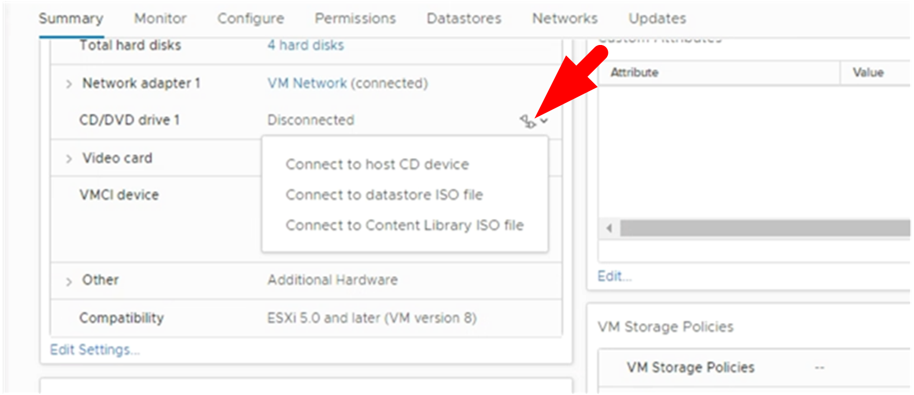

Concetti
Concetti
Aggiornamento da una versione precedente del plug-in SnapCenter per VMware vSphere
 Suggerisci modifiche
Suggerisci modifiche

|
L'aggiornamento a SCV 5,0 è supportato solo su VMware vCenter Server 7 update 1 e versioni successive; per VMware vCenter Server precedenti alla versione 7 update 1, dovresti continuare a utilizzare SCV 4,7. L'aggiornamento è un'interruzione sulle versioni non supportate del server VMware vCenter. |
Se si utilizza il plug-in SnapCenter per l'appliance virtuale VMware vSphere, è possibile eseguire l'aggiornamento a una versione più recente. Il processo di aggiornamento disregistra il plug-in esistente e implementa un plug-in compatibile solo con vSphere 7.0U1 e versioni successive.
Percorsi di aggiornamento
Se si è su SnapCenter Plugin per la versione VMware vSphere (SCV)… |
È possibile aggiornare direttamente il plugin SnapCenter per VMware vSphere a… |
DISTRIBUTORE IDRAULICO 4,9 |
Aggiornamento al distributore idraulico 5,0 |
DISTRIBUTORE IDRAULICO 4,8 |
Aggiornamento ai distributori idraulici 4,9 e 5,0 |
DISTRIBUTORE IDRAULICO 4,7 |
Aggiornamento ai distributori idraulici 4,8 e 4,9 |
DISTRIBUTORE IDRAULICO 4,6 |
Aggiornamento ai distributori idraulici 4,7 e 4,8 |

|
Eseguire il backup del plug-in SnapCenter per VMware vSphere OVA prima di avviare un aggiornamento. |
|
|
Il passaggio dalla configurazione di rete statica a DHCP non è supportato. |
-
Preparati per l'aggiornamento disattivando il plug-in SnapCenter per VMware vSphere.
-
Accedere all'interfaccia grafica di gestione del plug-in SnapCenter per VMware vSphere. L'IP viene visualizzato quando si implementa il plug-in VMware di SnapCenter.
-
Fare clic su Configuration (Configurazione) nel riquadro di navigazione a sinistra, quindi fare clic sull'opzione Service (Servizio) nella sezione Plug-in Details (Dettagli plug-in) per disattivare il plug-in.
-
-
Scarica l'aggiornamento
.isofile.-
Accedere al sito di supporto NetApp (https://mysupport.netapp.com/products/index.html).
-
Dall'elenco dei prodotti, selezionare plug-in SnapCenter per VMware vSphere, quindi fare clic sul pulsante DOWNLOAD LATEST RELEASE.
-
Scarica il plug-in SnapCenter per l'aggiornamento di VMware vSphere
.isofile in qualsiasi posizione.
-
-
Installare l'aggiornamento.
-
Nel browser, accedere a VMware vSphere vCenter.
-
Nella GUI di vCenter, fare clic su vSphere client (HTML).
-
Accedere alla pagina VMware vCenter Single Sign-on.
-
Nel riquadro Navigator, fare clic sulla macchina virtuale che si desidera aggiornare, quindi fare clic sulla scheda Summary (Riepilogo).
-
Nel riquadro Related Objects (oggetti correlati), fare clic su qualsiasi datastore nell'elenco, quindi sulla scheda Summary (Riepilogo).
-
Nella scheda Files dell'archivio dati selezionato, fare clic su una cartella qualsiasi dell'elenco, quindi fare clic su Upload Files (carica file).
-
Nella schermata a comparsa di caricamento, accedere alla posizione in cui è stato scaricato
.isoquindi fare clic su.isoImmagine del file, quindi fare clic su Apri. Il file viene caricato nell'archivio dati. -
Tornare alla macchina virtuale che si desidera aggiornare e fare clic sulla scheda Summary (Riepilogo). Nel riquadro VM hardware, nel campo CD/DVD, il valore deve essere "disconnesso".
-
Fare clic sull'icona di connessione nel campo CD/DVD e selezionare Connect to CD/DVD image on a datastore.

-
Nella procedura guidata, eseguire le seguenti operazioni:
-
Nella colonna Datastore, selezionare l'archivio dati in cui è stato caricato
.isofile. -
Nella colonna Sommario, accedere a.
.isoFile caricato, assicurarsi che nel campo tipo di file sia selezionata l'opzione "immagine ISO", quindi fare clic su OK. Attendere che il campo indichi lo stato "connesso".
-
-
Accedere alla console di manutenzione accedendo alla scheda Summary dell'appliance virtuale, quindi fare clic sulla freccia verde di esecuzione per avviare la console di manutenzione.
-
Immettere 2 per Configurazione di sistema, quindi inserire 8 per l'aggiornamento.
-
Immettere y per continuare e avviare l'aggiornamento.
-